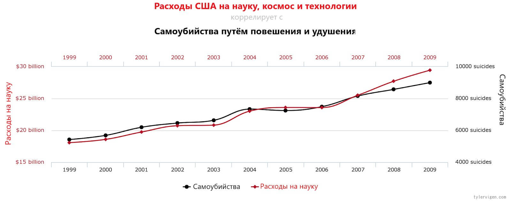
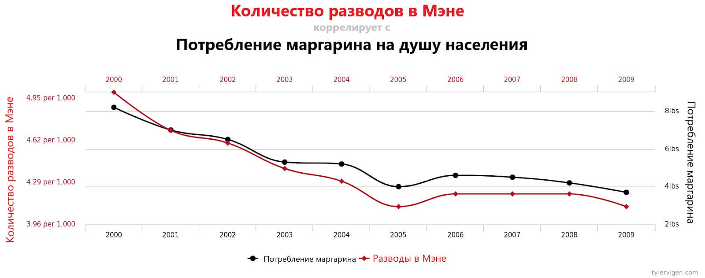

Replication crisis
Lev Kovalenko
В чем заключается кризис?

Научный метод проведения исследований
Какая бывает воспроизводимость1?
- Повторяемость измерений(также сходимость результатов измерений, англ. Repeatability)
- Повторяемость исследований (англ. Replicability) (Different team, same experimental setup)
- Воспроизводимость (англ. Reproducibility)
Что такое воспроизводимое исследвоание(ВИ)
«Цель воспроизводимых исследований - привязать конкретные инструкции к анализу данных и экспериментальным данным, чтобы исследование можно было воссоздать, лучше понять и проверить».
В чем причина кризиса воспроизводимости?
- недостаточное понимание алгоритма ML.
- недостаточное знакомство с исходными данными.
- неверная интерпретация результатов.
 
Стоит ли использовать машинное обучение?
Правила проведения воспроизводимых исследований
- Для каждого полученного результата сохраните алгоритм его получения.
- Избегайте этапов ручного управления данными или процессом.
- Сохраните точные версии всех использованных внешних инструментов.
- Используйте контроль версий.
- Храните все промежуточные результаты в стандартизированном виде.
- Для алгоритмов использующих случайность записывайте их random_state.
- Всегда храните вместе с графиками данные.
- Иерархический подход при генерировании результатов анализа.
- Всегда указывайте вместе текстовые утверждения и результаты исследования.
- Обеспечивайте доступность ваших результатов, данных и исследований.
Заключение
Машинное обучение в науке представляет проблему из-за того, что результаты недостаточно воспроизводимы. Однако учёные в курсе этой проблемы и работают над моделями ML, дающими более воспроизводимый и прозрачный результат. Настоящий прорыв произойдет, когда эта задача будет решена для нейросети.
Как сказал физик Ричард Фейнман в своей речи перед выпускниками Калифорнийского технологического института в 1974 году:
“Первый принцип науки заключается в том, чтобы не одурачить самого себя. И как раз себя-то одурачить проще всего.”